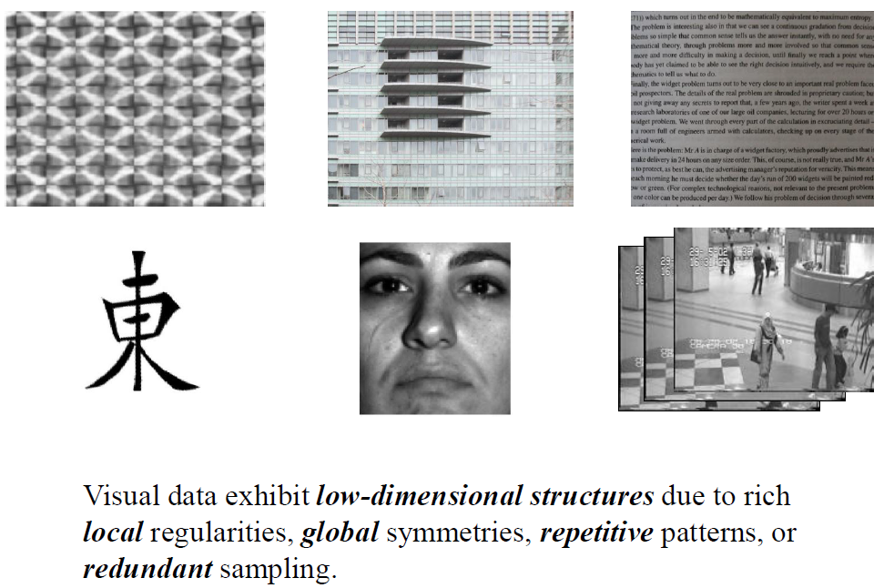

本文内容整理自论文《An Introduction To Compressive Sampling》，增加自己的理解。
压缩感知（Compressive Sensing，CS），有时也叫成Compressive Sampling。相对于传统的奈奎斯特采样定理——要求采样频率必须是信号最高频率的两倍或两倍以上（这就要求信号是带限信号，通常在采样前使用低通滤波器使信号带限），压缩感知则利用的数据的“某些特性”可以只采集少量的样本还原原始数据。
这个“某些特性”，借助MLSS2014马毅老师的课件上的例子来说明，

因为自然界的数据都存在局部低维结构、周期性、对称性等，因此，传统的固定采样率的采样方法必然存在信息冗余。由于信息冗余的存在，我们就知道有数据压缩那么一门学科。既然这样，为什么要把冗余的数据也采进来，再进行压缩呢，能不能不把冗余的数据采集进来？
压缩感知的思路就是：采集的过程就对数据进行了压缩，而且这种压缩能保证不失真（低失真）的恢复原始数据。
好了，那么就来了解一下压缩感知的具体问题，从词义上看，压缩感知就包含两层含义：压缩和感知。我们就从这两个方面入手。